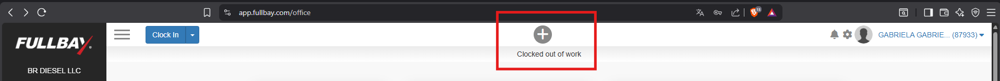
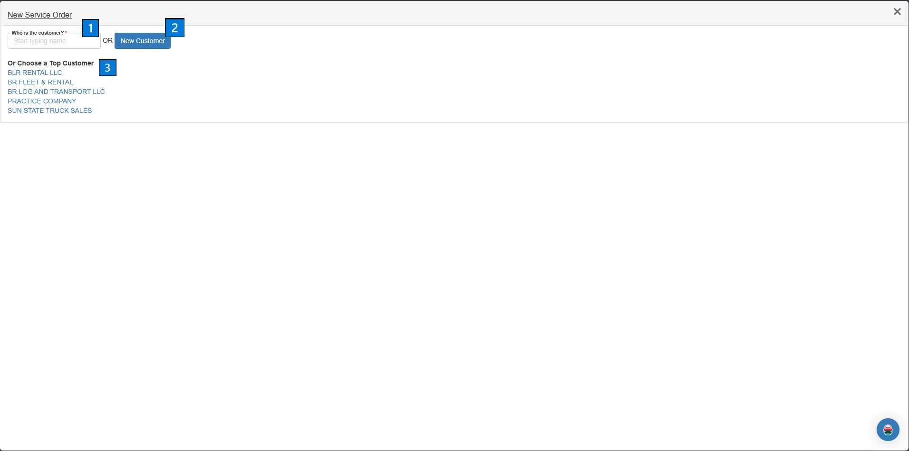
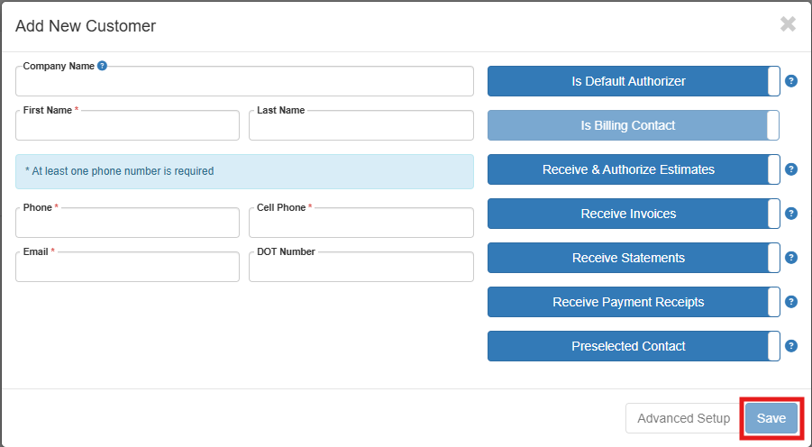
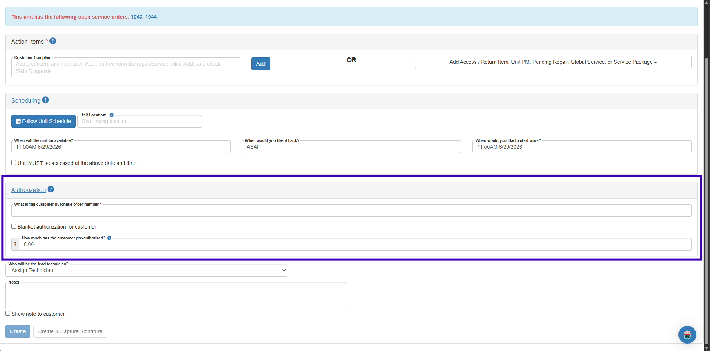
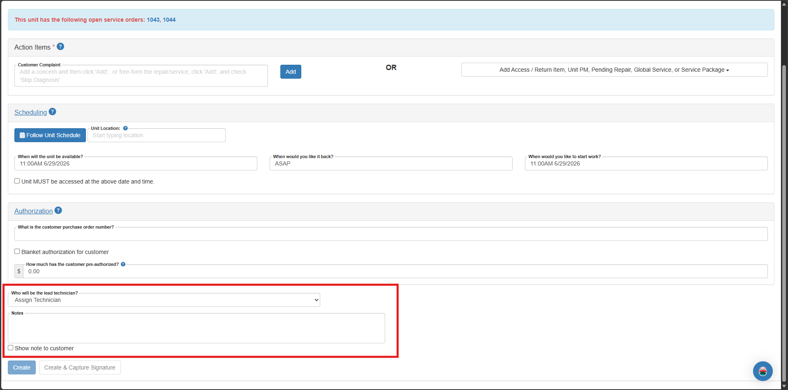
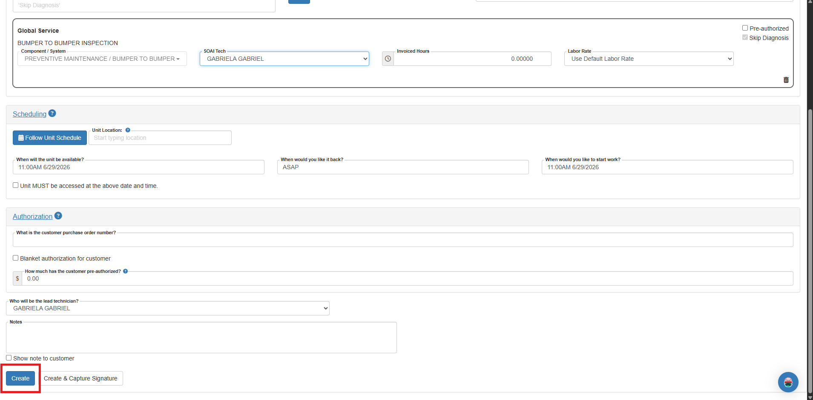
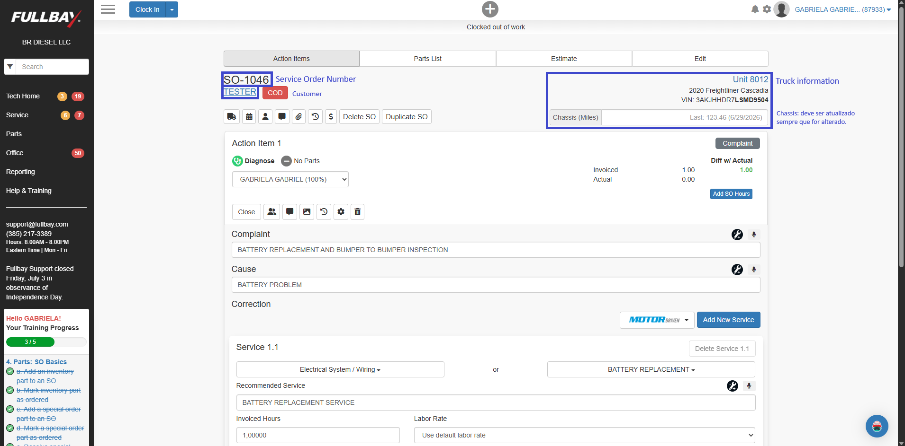
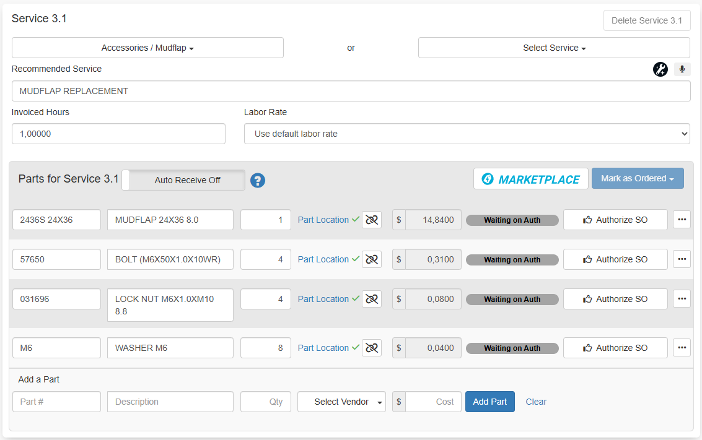

Manual de Treinamento Fullbay
Este manual apresenta os principais processos utilizados no Fullbay.
🔧 Criando uma Ordem de Serviço
Objetivo
Registrar uma nova Ordem de Serviço para um cliente.
Passo 1 - Iniciar a Ordem
1.1. Clique no botão indicado.
1.2. Nas opções seguintes:
1.2.3. Escolha: Sales
1.2.4. Em seguida: Service Order

Vídeo demonstrativo:
Passo 2 - Customer
Nesta tela, há três opções para adicionar o Customer:
2.1. Opção 1: Pesquisar o nome no campo de pesquisa.
2.2. Opção 2: Adicionar um novo clicando em New Customer.
2.3. Opção 3: Escolher na lista.

Para a situação 2.2, New Customer, adicionar as informações solicitadas e clicar em Save.

Caso o cliente já esteja cadastrado na base de dados, ao encontrá-lo e clicar em seu nome, terá a opção de especificar o contato solicitante do serviço ou deixar a própria empresa.
2.4. Em seguida, é necessário adicionar a Unit na qual o serviço será realizada.
O sistema apresenta uma lista de Units cadastradas para o cliente, ou você pode adicionar uma nova em New Unit (2.4.1).

2.4.1. Na necessidade de adicionar uma New Unit, a tela com as informações requeridas é a seguinte:

Passo 3 - Complaint
3.1. Em Action Items adiciona-se o Customer Complaint:
3.1.1. Para cada Complaint que se prevê uma solução específica, escrever e cliar em Add.
OU
3.1.2. Selecionar uma das opções disponíveis em: Add Access / Return Item, Unit PM, Pending Repair, Global Servce, or Service Package.

3.2. Ainda nesta tela é possível associar a Service Order a ser criada com uma purchase order number da empresa/cliente, sendo possível inclusive já estipular um valor pré-autorizado para realização do serviço.
.
3.3. A última coisa necessária para que o sistema permita a abertura da Service Order é designar um técnico.
Também é possível adicionar notas e optar que o cliente visualize ou não.

3.4 Confira se todas as informações preenchidas estão corretas e clique em Create.

Vídeo demonstrativo do passo a passo completo:
🔍 Definindo o Diagnose

1. Checar os Complaint, em alguns casos, separá-los para especificar.
2. Para cada Complaint especificar a Cause, quando não for algum problema específico, preencher com CUSTOMER REQUEST.
2.1. Quando não preenchido, especificar o tempo de trabalho estimado.
3. Exemplo de adição de serviço - Action Item- com adição de partes.
Especificação das Parts na seção de Action Items.
As Parts podem ser adicionadas através do Part# ou Descriptions. Enquanto são digitadas, as opções do sistema tendem a carregar.
- Apesar de aparecerem, os preços de custo não são editáveis nesta página, apenas na seção de Estimate.
